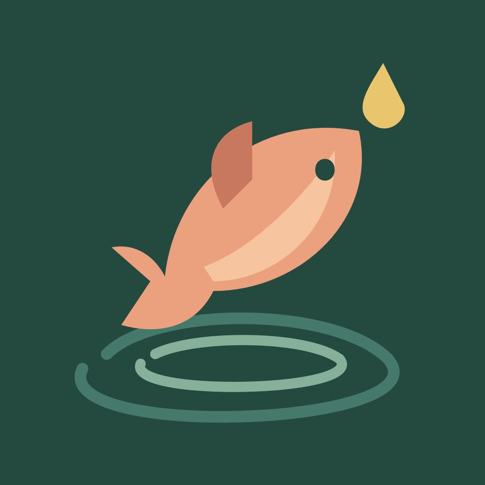

Mit Gefühl
Kurze Runden, ruhiges Üben und kleine Handbewegungen. Oder einfach per Touch spielen.

Ein Moment am Wasser
Auswerfen. Den Biss spüren. Mit Gefühl hochziehen.
Dein kleiner Angelmoment für iPhone · iOS 17+
Noch nicht im App Store veröffentlichtKurze Runden, ruhiges Üben und kleine Handbewegungen. Oder einfach per Touch spielen.
Acht eigene Fischarten entdecken, seltene Fänge sammeln und dein Fischlexikon füllen.
Ein lokales Duell mit zwei iPhones. Ohne Konto, Werbung oder Entwickler-Server.
A moment by the water
Cast, feel the bite and tip your iPhone toward you to lift. Play 90-second rounds or practice at your own pace. Discover eight original fish species and build your own pond. A local two-player duel connects two nearby iPhones. No account, ads or tracking.
In development. Not yet available on the App Store.
English support